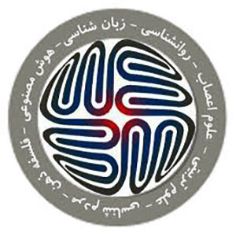
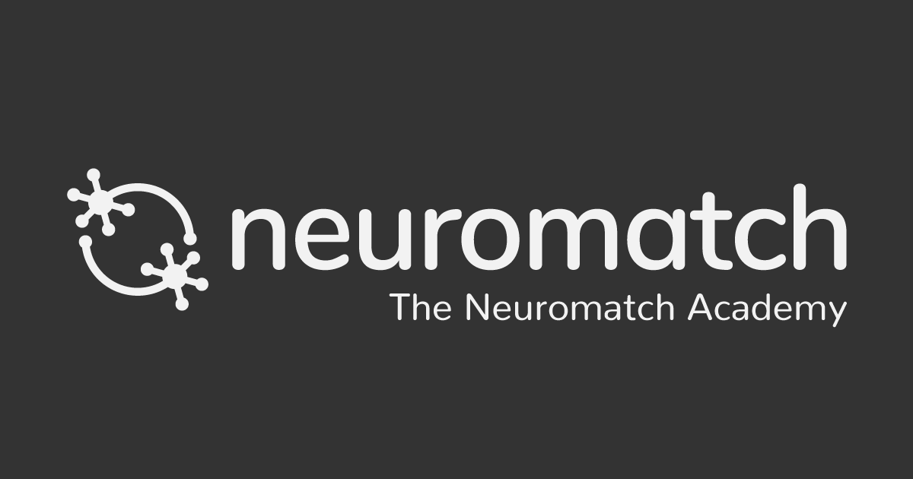

About Me
I am a senior B.Sc. student studying Electrical Engineering at the University of Tehran with a minor in Computer Engineering, and have a passion for Cognitive Neuroscience.
Currently, I am working as a Research Assistant at Cognition and Aging Lab at the University of Michigan as a volunteer research assistant on "Older and Younger Adults Cognitive Differences in a RL Task",
and also as a research assistant at NeuroMedia Group, RCMCI of Tehran University of Medical Science on "the Design and Development of Diagnostic Applications project using Artificial intelligence and Machine Learning Approaches Based on Structural and Functional MRI in Psychology and Psychiatry".
My primary areas of research is Cognitive and Computational Neuroscience, Brain-Computer Interface, and Human–Robot Interaction. I am also highly interested in Machine Learning, Reinforcement Learning, and Deep Learning as essential matters in my research.
Experience
 Research Assistant - 2021-present
Research Assistant - 2021-present
Cognition and Aging Lab, University of Michigan
Older and Younger Adults Cognitive Differences in a RL Task
Supervisor: Prof. C. Lustig
Research Assistant - 2020-present
NeuroMedia Group, Research Center for Molecular and Cellular Imaging
Tehran University of Medical Sciences
Diagnostic Applications using Artificial intelligence
and Machine Learning Approaches-
Based on Structural and Functional MRI in Psychology and Psychiatry
Supervisor: Dr. M. Nazemzadeh
Research Assistant - 2018-present
Cognitive Neuroscience Lab, NBIC, University of Tehran
1. Temporal Heterogeneity in Human Time Perception
2. Enhancement of Learning via tACS of r-LPFC and MFC
Supervisor: Dr. M. A-Dehaqani
Research Intern - Summer 2020
Cognitive Neuroscience Lab, NBIC, University of Tehran
Implementation of microdrive for electrophysiology set-up
Supervisor: Dr. M. A-Dehaqani
 Research Member - Summer 2019
Research Member - Summer 2019
Human-Computer Intercation Laboratory, University of Tehran
Fall Detection System
Supervisor: Prof. K. Setarehdan
 Chairman - 2019-2020
Chairman - 2019-2020
BTCS (Brain Technology and Cognitive Sciences program of University
of Tehran)
Education
 B.Sc., Electrical Engineering (2017-present), Minor in Computer Engineering
B.Sc., Electrical Engineering (2017-present), Minor in Computer Engineering
University of Tehran, Iran
GPA: 16.73/20 Equivalent to 3.51/4
Diploma in Math and Physics (2013-2017)
Farzanegan 2 High School,
National Organization for Development of Exceptional Talent
Tehran, Iran
GPA: 18.96/20 Equivalent to 4.0/4
Honors and Awards
Awarded Research Fellowship by National Elites Foundation, Iran. September 2020
 Awarded Paid Internship offer by Max Planck Institute, Germany (Canceled due
to Covid-19 Pandemic). June 2020
Awarded Paid Internship offer by Max Planck Institute, Germany (Canceled due
to Covid-19 Pandemic). June 2020
Stuttgart, Germany
Supervisor: Dr. Katherine J. Kuchenbecker
Awarded by Cognitive Science and Technologies Council (CSTC) Grant for Excellent Research. September 2019
Tehran, Iran
2nd Place in CNCS (Cognitive Neuroscience Competition for Students). August 2019
Tehran, Iran
 Ranked 1204th (national rank) in the National Universities Entrance Exam among
about 140,000 contestants (among the top %0.8). June 2017
Ranked 1204th (national rank) in the National Universities Entrance Exam among
about 140,000 contestants (among the top %0.8). June 2017
Accepted in the first stage of two scientifc Olympiads: Astronomy and Physics. 2016
Publications
-
Temporal Heterogeneity in the Perception of Time
Motahareh Pourrahimi, Niusha Mirhakimi, Nasim Eshraghi, Sadaf Agahi, Mohammadreza A-Dehaqani
8th Basic and clinical Neuroscience Congress (2019), December 2019
Skills
-
Simulation
MATLAB and SIMULINK, NI Multisim, PSPICE, Proteus, Altium Designer -
Programming Languages
Highly skilled in Python, C, C++, R. (GitHub page) -
Hardware Acceleration Design
Verilog, Modelsim, Quartus -
Hardware
ARM/AVR Microcontrollers, Arduino -
General
Windows and Linux(Ubuntu), LATEX, Microsoft Office
Notable Projects
To be updated soon.
Selected Course Projects
-
Optimization Electricity Dispatching
This real-world optimization problem of Electric Power Dispatching in Sweden includes the phases of data collection, problem modeling and optimization solution. Full Report and Codes are available on my GitHub page
Course: Operation Research, University of Tehran -
Fitting and Comparison of Behavioral Models
Analysis of behavioral data requires a good understanding of task designing and functionalities of the human body, especially circuits or target regions of the brain that we aim to study. With the lack of a good understanding, fitting and comprising of models are blinded and just a few measurements are available to apply in choosing the top model; however, no helpful explanation could be proposed for why the model works good or even be able to detect possible errors.
Models: Random Model, Rescorla Wagner, Noisy Win-Stay-Lose-Shift, Rescorla Wagner + choice kernel, Epsilon Greedy.
Full Report and Codes are available on my GitHub page
Course: Reinforcement Learning, University of Tehran -
Control of The Magnetic Levitation System
Stabilization and Tracking Control of The Magnetic Levitation System for Robotic Motion using PID Controllers in MATLAB SIMULINK. MLS is known as electromechanical systems in which an object floats in a specific area without the use of any support. This technology is being widely developed due to the frictionlessness of the system; because it eliminates energy losses due to friction. This technology has been used in various fields such as precision positioning systems, engines, vehicles with magnetic force and wind turbines, micro-robots and biomedical devices. In this project, we examined the controller design methods by positioning the poles with the help of state feedback and examining different observers.
Full Report and Codes are available on my GitHub page
Course: Modern Control, University of Tehran -
My Shazam - Music Search Engine
Developing a Music Search Engine in MATLAB using Signal Processing Algorithms, Fourier Transform, Signal Spectrum, Digital Filters, etc. Written in MATLAB. Codes available on my GitHub page
Course: Signals and Systems, University of Tehran -
Implementation of pipelined ARM on Altera DE2 FPGA
ARM is a reduced instruction set computer and this project was implemented using a given list of intruction sets and a general pipeline structure. It is written in Verilog, simulated in ModelSim and programmed on the FPGA with Quartus. Debugging was done using the SignalTap tool in Quartus. Uses on-board SRAM module. Codes available on my GitHub page
Course: Computer Architecture Lab, University of Tehran


{kind=link}
{kind=link}
{kind=link}
{kind=link}
{kind=link}
{kind=link}
{kind=link}
Also, other Projects are available on my GitHub page
Teaching Experiences
| Teaching Assistantship | |||||||||||
|
: Holding Extra-Curricular Classes
Spring 2021Fall 2020Spring 2020Fall 2019 |
Certifications
Deep Leaning Summer School by Neuromatch Academy , August 2021
Specialized Course in Cognitive and Computational Neuroscience by IPM , July 2021
Virtual Working Memory Symposium, by The European Society For Cognitive Psychology, June 2021
 Reinforcement Learning Virtual School, by Toulouse AI institute ANITI, March 2021
Reinforcement Learning Virtual School, by Toulouse AI institute ANITI, March 2021
Brain and Cognetive Sciences - Methods to study the brain in health and disease, by Royan Institute, August 2018
 Teaching Assistant Training Workshop, by University of Tehran, Fall 2018
Teaching Assistant Training Workshop, by University of Tehran, Fall 2018
 Fundamental in MATLAB, by IEEE Student Branch, University of Tehran, Summer 2017
Fundamental in MATLAB, by IEEE Student Branch, University of Tehran, Summer 2017
Arduino Course, by IEEE Student Branch, University of Tehran, Summer 2017